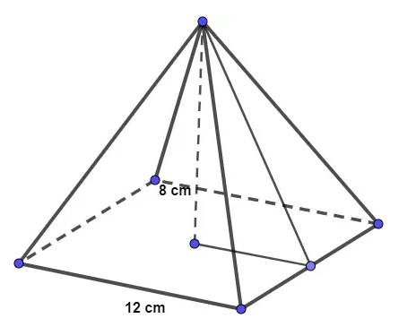

Exercícios
Prisma Regular
Qual é o volume do prisma da imagem a seguir, sabendo que ele é um prisma reto e sua base é quadrada?
Ab = 12 . 12
Ab = 144 cm²
V = Ab . h
V = 144 . 40
V = 5760 cm³
Seu volume é de 5760cm³
Pirâmide de base quadrada
Analise a pirâmide a seguir:

Sabendo que a sua base é quadrada, então a sua área total é:
12 : 2 = 6
Sabemos que:
g² = 6² + 8²
g² = 36 + 64
g² = 100
g = √100
g = 10
Sabendo que g = 10, calcularemos a área do triângulo que forma a face lateral
da pirâmide e multiplicaremos por 4 para encontrar a área lateral:
Agora, a área da base da pirâmide é igual à área do quadrado:
Ab = l²
Ab = 12²
Ab = 144 cm²
A área total dessa pirâmide é de 144 + 240 = 384 cm².
Cilindro
Um porta-joias é feito no formato de cilindro, como na imagem a seguir:
Podemos afirmar que a área total desse porta joias é de:
A = 2π . r (r+h)
A = 2π . 3 (3+8)
A = 2 . 3 . 11π
A = 66π cm³
A área total do porta joias é de 66π cm³.
Cone
Um arquiteto está fazendo um projeto de iluminação de ambiente e necessita
saber a altura que deverá instalar a luminária ilustrada na figura:
Esquema ilustrativo de projeto de iluminação que forma um cone de geratriz igual a 5 m.
Sabendo que a luminária deverá iluminar uma área circular de 28,26 m², considerando π ≅ 3,14, a altura h será igual a:
Sabemos que:
A = π ⸳ r²
Calculando o raio, temos que:
28,26 = 3,14 . r²
r² = 28,26 : 3,14
r² = 9
r = √9
r = 3 metros
Agora, encontraremos a altura, pois sabemos que:
g² = h² + r²
5² = h² + 3²
25 = h² + 9
25 – 9 = h²
h² = 16
h = √16
h = 4 metros
A altura será igual a 4m.
Esfera
Chamamos de cunha esférica o sólido geométrico formado pela rotação de um semicírculo quando essa rotação é menor que 360°, ou seja, 0 < θ < 360°.
Ilustração de uma cunha esférica, uma das partes da esfera, em uma questão presente em uma lista de exercícios sobre esfera.
Se o ângulo for de 60° e o raio for igual a 3 cm, então o volume da cunha é de:
V = π r 3 θ 270°
V = π . 33 . 60270
V = π . 9 . 60270
V = 54 0 π 270
V = 2π cm³